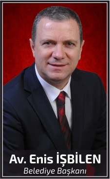

Avukat Enis İŞBİLEN
1964 yılında Uzunköprü'de doğan Enis İŞBİLEN, ilk, orta ve lise öğrenimini Uzunköprü'de tamamladıktan Uzunkopr belediye baskani av enis isbilen2sonra 1982-1983 öğretim yılında Marmara Üniversitesi Hukuk Fakültesi'ne girmiş ve 1987 yılında mezun olmuştur.
Eğitimini tamamladıktan sonra başladığı serbest avukatlık mesleğini 20 yıl süreyle devam ettiren İŞBİLEN, bir taraftan da aktif siyasetle meşgul oldu. 1992 yılında CHP Uzunköprü İlçe Sekreteri görevini üstlenip 2007 yılında da Yönetim Kurulu Üyeliği ve İlçe Eğitim Sekreterliği görevlerini yürütmüştür.
2009 ve 2014 yıllarında yapılan yerel seçimleri kazanan İŞBİLEN, halen Uzunköprü Belediye Başkanlığı görevini yürütmektedir.
İŞBİLEN, evli ve bir kız çocuk babasıdır.